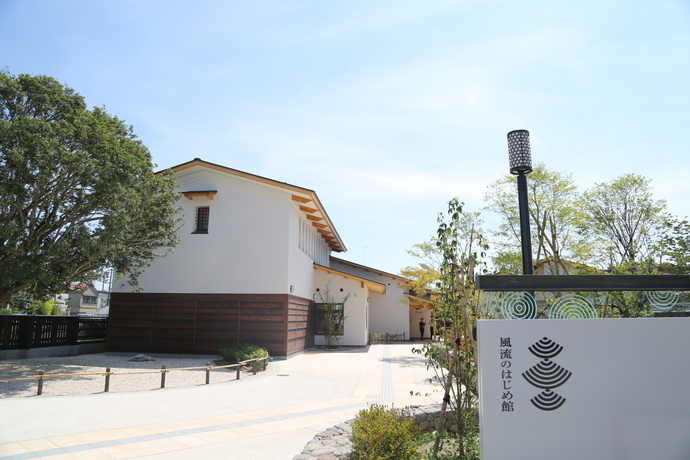
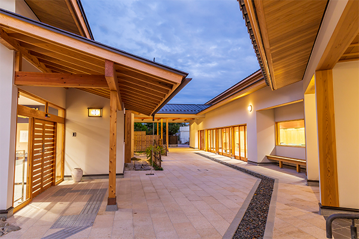
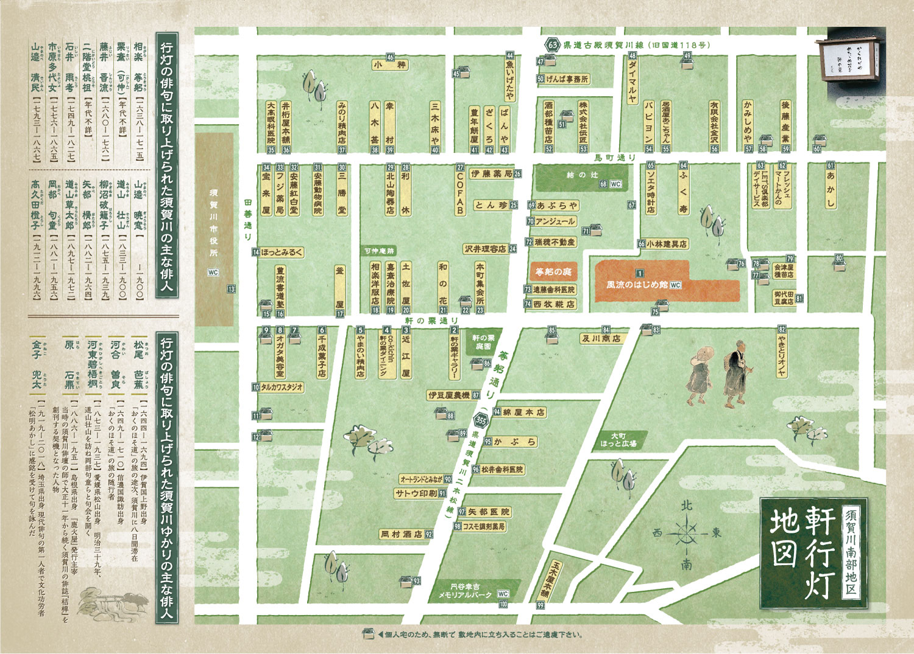

俳句をはじめとした様々な和文化の伝承・市民活動拠点施設
「須賀川市風流のはじめ館」は２０２０年秋、須賀川市芭蕉記念館の後継施設として、開
館しました。
須賀川市は、奥州街道屈指の宿場町として栄えていたまちです。
俳聖・松尾芭蕉が「おくのほそ道」の旅の途中、俳友の相楽等躬を尋ねて、八日間滞在し
ました。
また、町人の学びの舎である須賀川郷学所が置かれるなど、人々の交流のなかで四季を愛
で愉しむ心、古きを学ぶ心、先人を敬う心などが育まれ、今日まで大切に受け継がれてきま
した。
当施設は、俳句文化を中心に多種多様な和文化をとおして、日々を豊かに彩る心のおきど
ころとなる場です。年間を通して地域文化の展示企画や和文化に親しむ「すかがわ大人
塾」、「こども和文化塾」、ワークショップなどを開催しています。
施設のご紹介

風流のはじめ館 施設前広場
和の趣の施設。外スペースでは「和傘アート」など様々なイベントが開催されています

風流のはじめ館 施設入口
施設は木のぬくもりが感じられ、俳句や和文化に関する企画や展示などが行われています

すかがわ絵地図
松尾芭蕉はおくのほそ道で須賀川に八日間も滞在しました。芭蕉ゆかりの地をすかがわ絵地図で巡ってみては

軒行灯地図
須賀川南部地区には須賀川の俳人や須賀川ゆかりの俳人の句が軒先の行灯に取り上げられています
施設情報
所在地
962-0832
福島県須賀川市本町８１－４
福島県須賀川市本町８１－４
電話番号
0248-72-1212
FAX番号
0248-94-2230
ホームページ
営業時間
9:00-17:00
定休日
ホームページをご確認ください